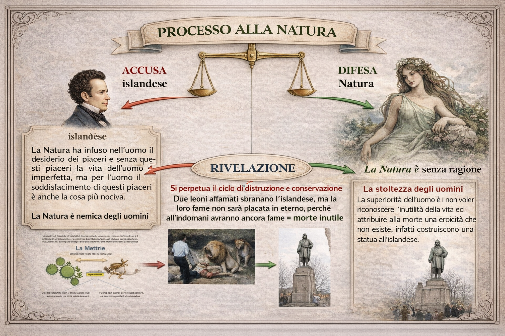

Le conseguenze della presa di coscienza in Leopardi
1. Introduzione: quando la Natura cambia volto

Nel primo momento del suo pensiero Leopardi aveva immaginato la Natura come una madre benevola, capace di proteggere l'uomo attraverso le illusioni e l'immaginazione. Ma a un certo punto avviene una svolta radicale: Leopardi comprende che il dolore umano non nasce dalla civiltà o dalla storia, ma dalla Natura stessa.
Nasce così il pessimismo cosmico: la Natura non è più madre, ma una forza indifferente che genera la vita senza preoccuparsi della felicità delle sue creature.
L'uomo desidera un piacere infinito, ma il mondo può offrirgli solo piaceri limitati e momentanei. Questo squilibrio rende inevitabile l'infelicità umana.
Questa scoperta non è solo filosofica: è una vera e propria presa di coscienza.
Il testo che rappresenta meglio questo momento è il Dialogo della Natura e di un Islandese.
2. Il Dialogo della Natura e di un Islandese: un processo alla Natura
In questa operetta Leopardi costruisce una scena molto particolare: sembra quasi un tribunale.
Da una parte c'è l'Islandese, che rappresenta l'uomo. Dall'altra parte c'è la Natura, rappresentata come una figura femminile gigantesca.
L'Islandese accusa la Natura di aver creato l'uomo condannandolo al dolore.
Secondo lui la Natura ha fatto due cose contraddittorie
- ha dato all'uomo un desiderio infinito di felicità;
ma ha reso impossibile soddisfare questo desiderio.
Per questo arriva a una conclusione durissima
la Natura è nemica degli uomini.
3. La risposta della Natura
La risposta della Natura è ancora più sconvolgente.
La Natura non si difende dicendo di essere buona. Ma non ammette neanche di essere cattiva.
Dice semplicemente che non si occupa affatto degli uomini.
La Natura non ha intenzioni morali, non vuole fare del bene né del male.
Funziona come una macchina immensa che produce e distrugge continuamente.
La vita dell'universo è infatti, secondo Leopardi, un ciclo eterno di produzione e distruzione.
Gli esseri viventi nascono, soffrono e muoiono perché questo è il modo in cui funziona la natura.
4. La rivelazione finale
Alla fine del dialogo avviene una scena simbolica molto forte.
L'Islandese viene assalito e divorato da due leoni affamati.
Questa scena mostra con brutalità il funzionamento della Natura
- l'uomo muore;
- i leoni sopravvivono per un giorno;
il ciclo della vita continua.
Non c'è giustizia. Non c'è senso. Non c'è uno scopo.
C'è solo il meccanismo naturale della sopravvivenza.
5. L'illusione degli uomini
Dopo la morte dell'Islandese accade qualcosa di paradossale.
Gli uomini costruiscono una statua in suo onore.
Trasformano la sua morte in un gesto eroico. Ma per Leopardi questo è un inganno.
Gli uomini non vogliono accettare la verità: che la morte dell'Islandese non ha alcun significato.
È solo un episodio del ciclo naturale.
Attribuire eroismo a quella morte significa nascondere la verità della condizione umana.
6. La vera conseguenza della presa di coscienza
Con il Dialogo della Natura e di un Islandese Leopardi compie un passo decisivo.
Capisce che
- la Natura non è madre;
- non è nemmeno veramente nemica;
è semplicemente indifferente.
Il dolore non ha uno scopo. Il dolore non è una punizione. Il dolore è parte del funzionamento dell'universo.
Questa è la presa di coscienza leopardiana.
Una verità dura, ma anche liberatoria: l'uomo smette di cercare illusioni e guarda il mondo per quello che è.
7. Cosa succede dopo questa scoperta
Dopo questa rivelazione il pensiero di Leopardi prende tre direzioni
La presa di coscienza → il Dialogo della Natura e di un Islandese
Lo stoicismo tragico → testi come l'Ultimo canto di Saffo, dove l'uomo affronta il dolore con dignità
Il titanismo solidale → La Ginestra, dove gli uomini si uniscono tra loro contro la crudeltà della Natura
Conclusione
Il Dialogo della Natura e di un Islandese rappresenta uno dei momenti più radicali della filosofia di Leopardi.
Il poeta distrugge tutte le illusioni consolatorie
- la Natura non protegge l'uomo;
- il mondo non ha uno scopo morale;
il dolore non ha un senso.
Ma proprio da questa verità nasce una nuova possibilità: se la Natura è indifferente, allora l'unico valore possibile diventa la solidarietà tra gli uomini.
Ed è da qui che nascerà l'ultima grande idea leopardiana: la social catena. Ma il nostro autore dovrà attraversare un’altra fase, lo scoramento. Dopo questa potrà mostrare agli uomini il nuovo eroe, il titano che combatte pur sapendo di essere sconfitto.